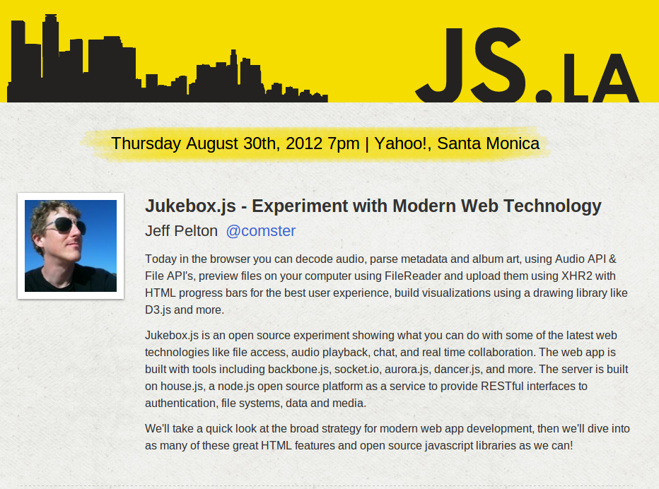

JS.LA
Jukebox Home Jukebox Demo Jukebox on Github About Me

Contents
- App Requirements
- Technology Strategy
- HTML5 App Features & Limitations
- System Architecture
- RESTful server, socketio, and static files
- Backbone Client App
- Organizing a backbone project
- Chat & sockets
- Audio in the browser using aurora.js
- Metadata from audio, album art
- HTML sliders and progress bars, drag and drop
- Uploading with xhr2
- Vizualizing audio using dancer.js & d3
- Mobile approach using media queries and user agent
- Where to go from here?
App Requirements
- HTML5 Web App
- Audio Playback without Flash
- Chat Rooms via Sockets
- User Authentication
- Media Server
- Library Data
- Queue Data
Technology Strategy
Open Source. Not targeting massive deployment to production. Experimenting with the technology.
HTML5 App Features & Limitations
Applications targeting the browser. HTML5, JS & CSS.
- Browser compatability
- URLs & SEO
- Device screen resolutions
Network connection, Offline & Caching
Resources
- HTML5rocks.com
- Can I Use.com
- TodoMVC: JS framework list
System Architecture
Server
- House on Node.js
- Users & Auth
- Media Uploads
- Library Data & Queue
- Chat Room Sockets
Client
- Backbone App View
- Nav View
- Media Player View
- Player Controls
- Player Information
- Player Visualization
- Library View
- Song List
- Song Row
- Song Upload
- Song Search
- Song List
- Queue View
- Song Queue List
- Song Played List
- Chat View
- Room List
- New Room Form
- Open Room
- Member List
- Message List
- Message Row
- User Avatar & Name
- Msg Txt
- New Message Form
- Room List
RESTful server, socketio, and static files
Backbone friendly REST endpoints:
- Authentication
- Media Files
- Song Library
- Song Queue
- Songs Played
- Chat Rooms REST & socket server
Backbone static files served from apps/jukebox/web to /jukebox
Backbone Client App
TODO Code exmaples of chat View, List, Collection, and sockets.
Organizing a backbone project
- Routing URLs
- Can I Use?: History
- Require.js & Why AMD?
Chat & sockets
Audio in the browser using aurora.js
Metadata from audio, album art
HTML sliders and progress bars, drag and drop
- Can I Use?: Input range
- Can I Use?: Progress Meter
- Can I Use?: DragnDrop
- http://www.html5rocks.com/en/tutorials/file/dndfiles/#toc-selecting-files-dnd
Example:
<input class="rating" type="range" min="0" max="100" title="Rating" value="50">
<meter min="0.0" max="100.0" value="33.33"></meter>
Result:
Uploading with xhr2
Example:
var formData = new FormData();
var xhr = new XMLHttpRequest();
formData.append('files', blobOrFile);
xhr.open('POST', '/api/files', true);
// Listen to the upload progress.
var progressBar = $row.find('progress');
xhr.upload.onprogress = function(e) {
if (e.lengthComputable) {
progressBar.val((e.loaded / e.total) * 100);
progressBar.textContent = progressBar.value; // Fallback for unsupported browsers.
}
};
xhr.onload = function(e) {
console.log('upload complete');
var data = JSON.parse(e.target.response);
};
xhr.send(formData);
Vizualizing audio using dancer.js & d3
- Basic D3 Sample
- Dancer API
- Dancer patch to work with Aurora forked on github
- Result & Demo
Example:
var dancer = new Dancer();
var kick = dancer.createKick({
onKick: function ( mag ) {
console.log('Kick!');
},
offKick: function ( mag ) {
console.log('no kick :(');
}
}).on();
Mobile approach using media queries and user agent
- Target screen sizes using css media queries
- Use browser user agent to determain iphone for limiting visualization
- Not currently targeting network connection for media format & compression
Example of css media query to format app for smaller screens. Example of window.navigator.userAgent.indexOf('iphone');
Where to go from here?
- Web Workers
- Reference files remotely, without CORS
- Podcast player
- Visualizations as plug-ins
- Skins
- Drag and drop images to chat
- DJ more than the audio
- Drag and drop queue
- Round Robin Queue
- Compress HTML app css & js.